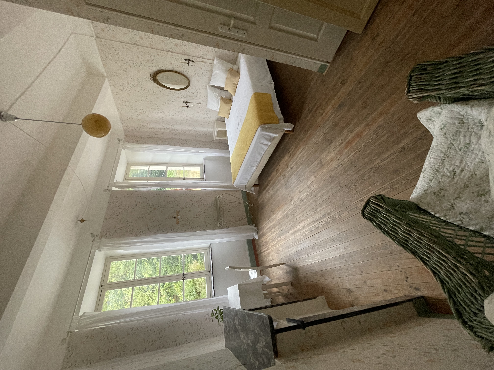
Det lyse værelse
Højt til loftet, originale plankegulve og lyst tapet. To store vinduer lukker morgenlyset og det grønne ind.
En romantisk middelalderby ved floden Jaur — midt i Languedoc og en af Frankrigs største nationalparker.
Maison Romantique ligger i hjertet af Olargues — optaget på den officielle liste over Frankrigs smukkeste landsbyer. Husets værelser står med deres originale indretning, gulve og detaljer, og fra de fleste af dem er der udsigt til den gamle stenbro og floden nedenfor.
Byen tiltrækker først og fremmest dem, der søger den ægte, gamle stemning og den storslåede natur omkring. Her er stille. Her er smukt. Og her er tid til at trække vejret.
Vi bor cirka 40 minutters kørsel fra Middelhavet, midt i Frankrigs største vinområde, og med en af landets største nationalparker som baghave.
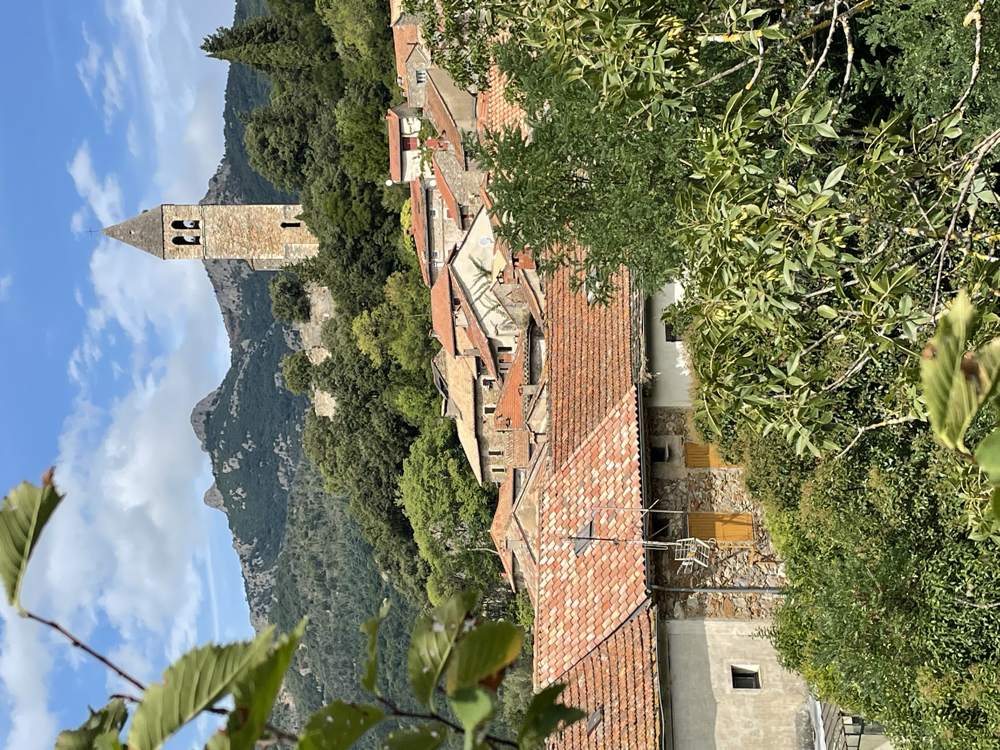

Floden Jaur med det klareste vand løber gennem vores baghave — helt perfekt til en dukkert i det varme vejr. Find en sten i solen, læg dig i det kølige vand, og mærk roen fra naturen.
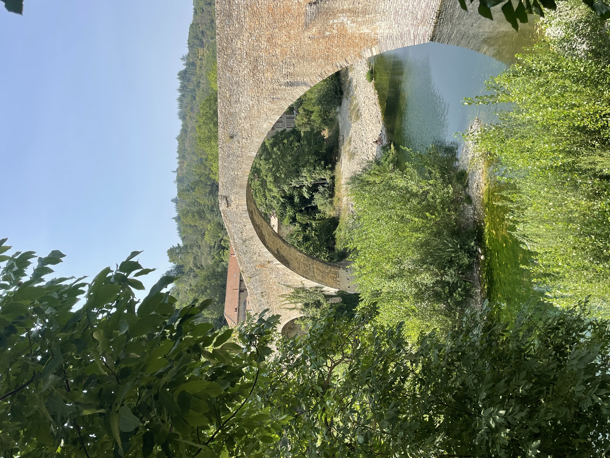
Broen Pont du Diable er et af byens vartegn og stammer fra 1200-tallet. Den buer elegant over floden, og der er udsigt til den fra de fleste af husets værelser — et stykke levende historie, du vågner op til.
Ifølge legenden byggede djævelen selv broen i bytte for sjælen fra den første, der krydsede den. Snedigt nok sendte indbyggerne en sort kat over først — og siden har Djævlens Bro været et af landsbyens kæreste symboler.
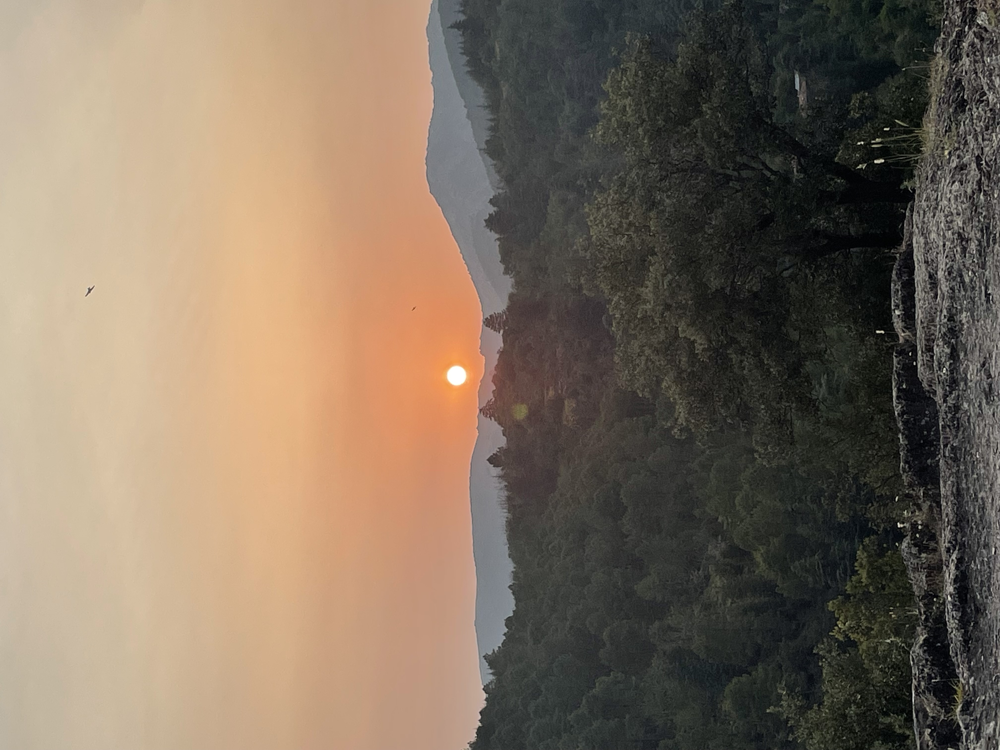
Den smukkeste solnedgang ses fra byens højeste punkt ved det gamle kirketårn. Tag et glas rosé med, nyd stilheden og det vide udsyn over bjergene, mens dagen langsomt falder til ro.
Indrettet med den originale stemning bevaret — gamle gulve, fine detaljer og udsigt til floden fra de fleste værelser.

Højt til loftet, originale plankegulve og lyst tapet. To store vinduer lukker morgenlyset og det grønne ind.
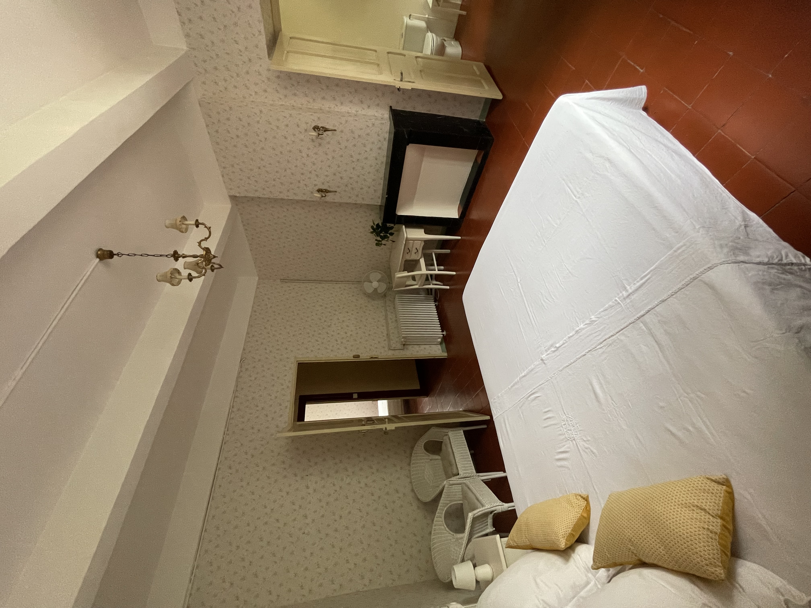
Blomstret tapet, antikt spejl og bløde gardiner. Et rum, der står, som det altid har gjort — roligt og romantisk.
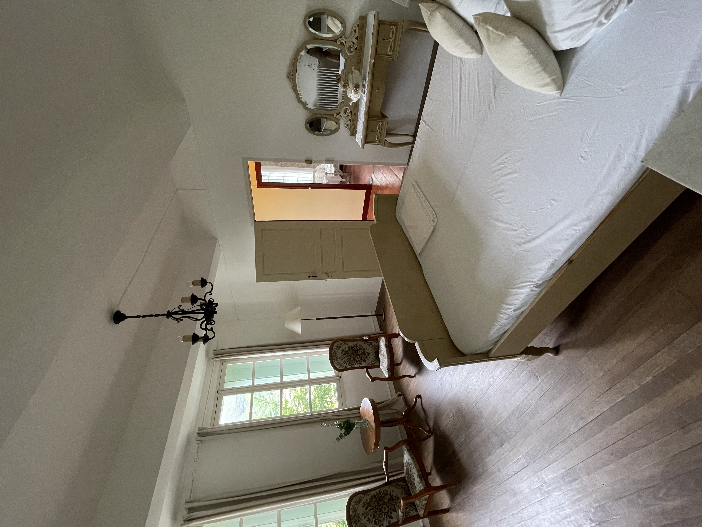
Antikke møbler, en smuk kommode med spejl og plads til at slå sig ned. Vinduerne vender ud mod by og bjerge.
To rolige steder at samles — om aftenen ved pejsen og om morgenen i gårdhaven.
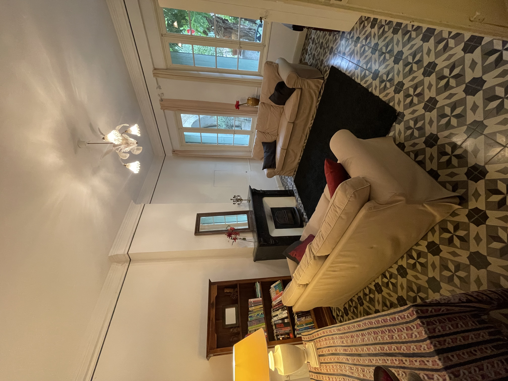

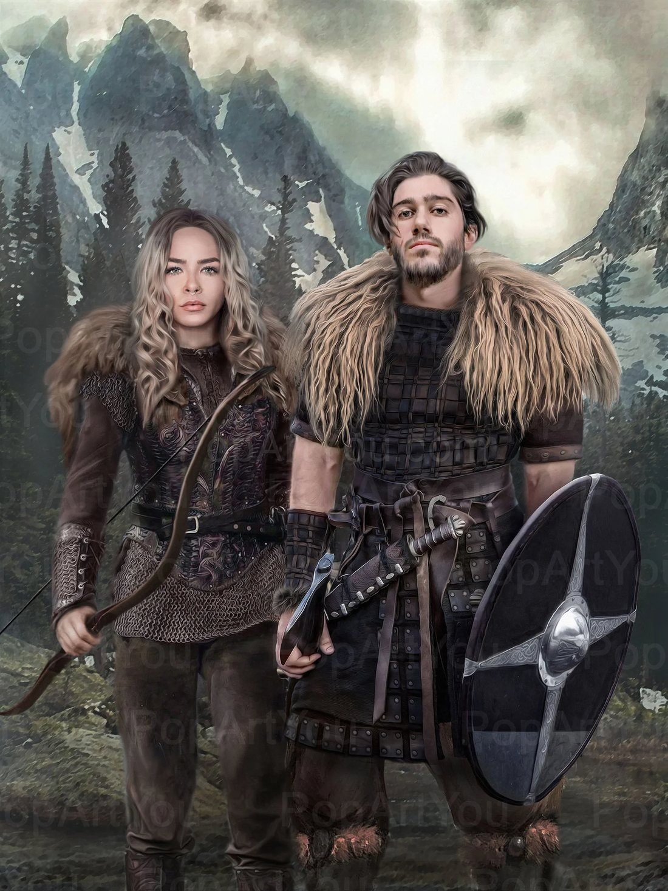
I sommeren 2025 besøgte vi – Hanne og Lau – Olargues for første gang. Det var egentlig blot en kort ferie på fire dage, men byen gjorde et uudsletteligt indtryk på os. Vi forelskede os i den særlige stemning, den historiske charme, den smukke natur og den ro, som præger livet her.
De fire dage blev begyndelsen på et nyt kapitel i vores liv. Kort efter traf vi en beslutning, som mange ville kalde modig: Vi solgte vores hjem i Danmark og købte dette smukke hus ved floden i Olargues.
I dag lever vi vores drøm om at byde gæster velkommen til Maison Romantique. Vores ambition er at skabe et sted, hvor man føler sig hjemme fra første øjeblik – et sted med nærvær, personlig gæstfrihed og tid til at nyde livet.
Vi glæder os til at dele vores kærlighed til Olargues og området med jer og til at give jer de bedste anbefalinger, så jeres ophold bliver fyldt med gode oplevelser og minder, I har lyst til at tage med hjem.
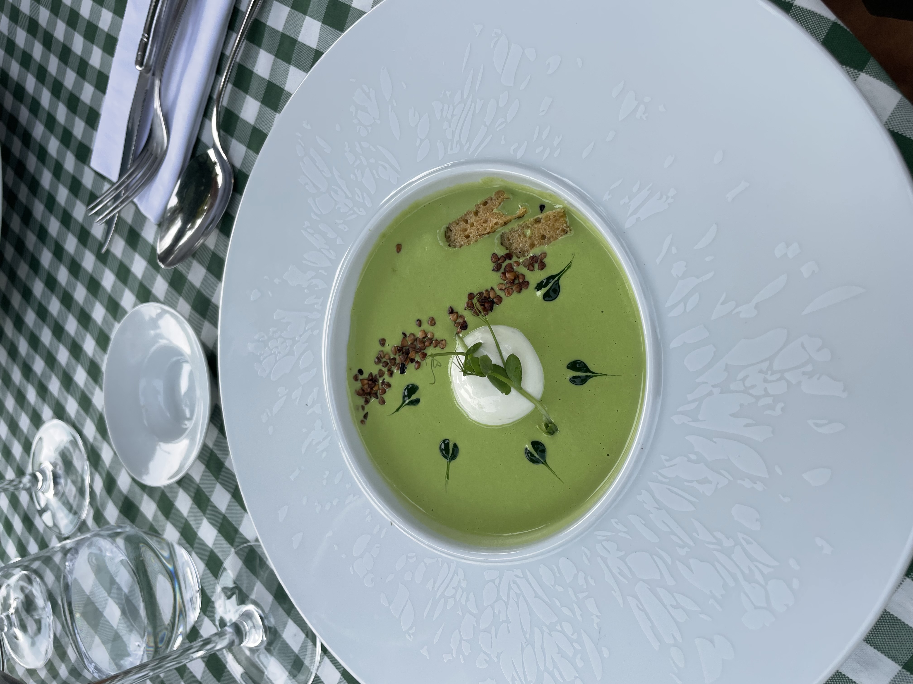
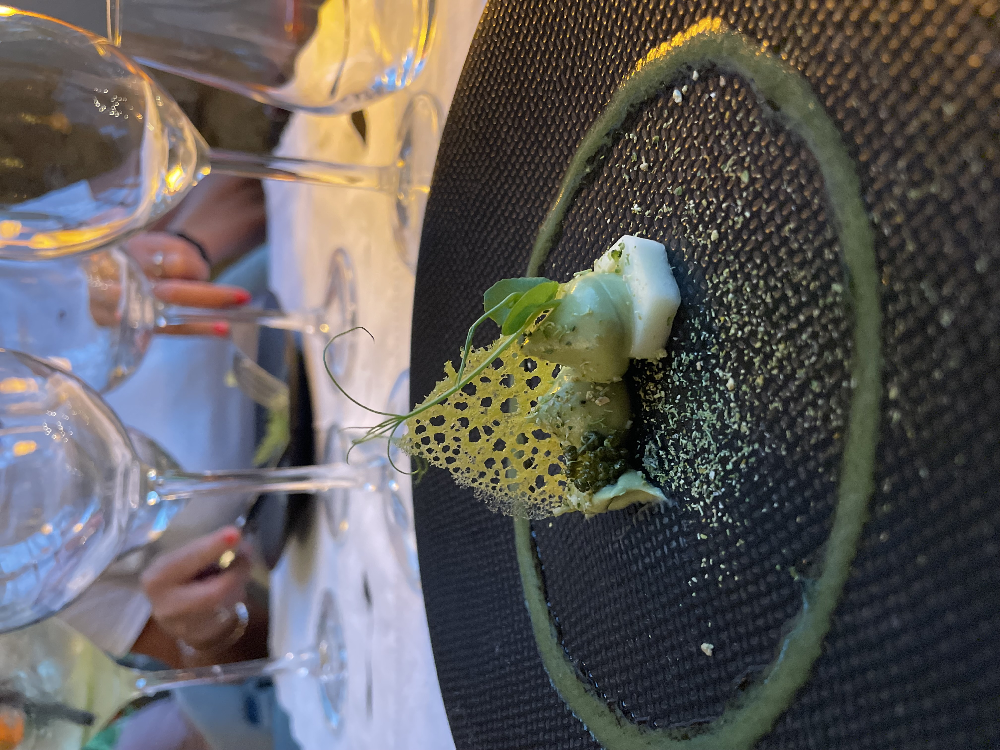

Lige ved huset finder du restauranten Fleur d'Olargues, anbefalet i Michelin-guiden 2025. Et køkken af høj kvalitet i smukke omgivelser under vinrankerne — kun et par skridt fra din dør.
Inden for cirka 20 minutters kørsel ligger yderligere 3–4 restauranter af høj kvalitet, så der er rig mulighed for gode måltider hele opholdet igennem.
Olargues ligger i en af Frankrigs største nationalparker, midt i vinområdet Languedoc og cirka 40 minutter fra Middelhavet.
Smag dig gennem Languedoc — Frankrigs største vinområde — med besøg hos de lokale vingårde.
Fra korte spadtureture til længere trekking-ruter gennem nationalparkens bakker og skove.
Stier og grusveje i alle sværhedsgrader for både mountainbike og gravelbike.
Kom ud på floderne i området, når du har lyst til lidt mere fart over oplevelsen.
Det klare flodvand i baghaven er perfekt til en svømmetur på en varm dag.
Cirka 40 minutters kørsel væk venter kysten, når du trænger til salt vand og strand.
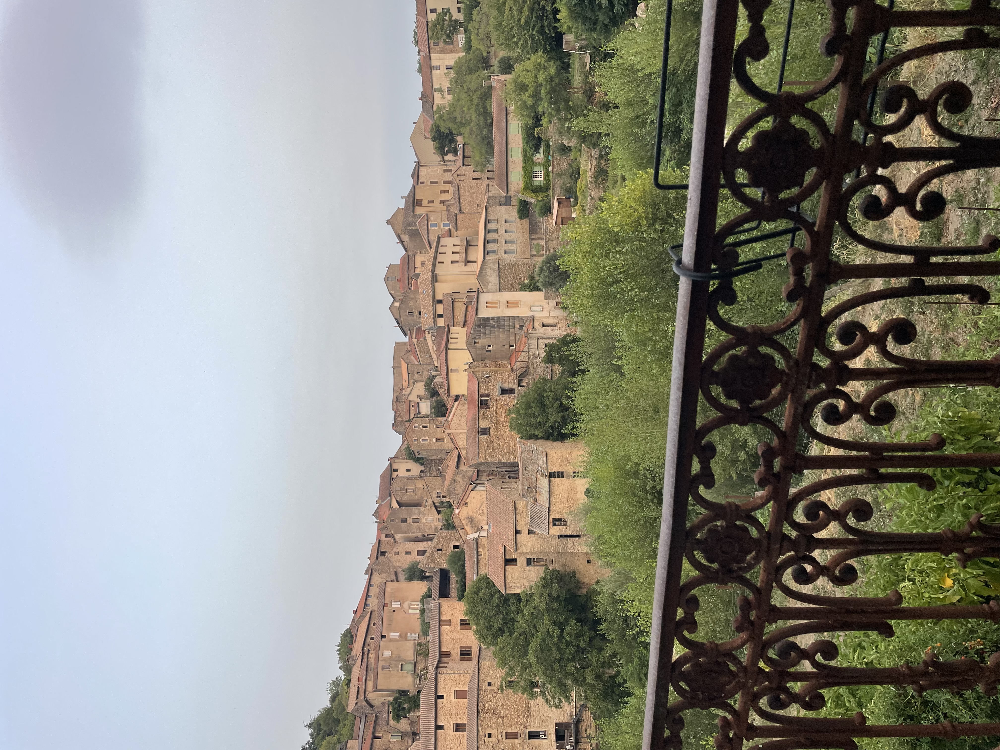
Den nemmeste vej er at flyve til Montpellier. Herfra er der cirka 1 time og 20 minutters kørsel til huset.
Send en forespørgsel på mail eller telefon, så vender vi tilbage til dig.
Bemærk: Der er åbent for bookinger i 2026 fra den 7. oktober.
"Et fortryllende sted. Vi vågnede til udsigten over broen og floden — og morgenmaden i gårdhaven var et højdepunkt hver dag."
"The most charming little village, and hosts who made us feel completely at home. The river right behind the house is magical."
"Un séjour inoubliable. La maison a une âme, le village est splendide, et l'accueil était chaleureux. Nous reviendrons !"
Anmeldelserne her er eksempler — de opdateres med rigtige gæsteudtalelser, efterhånden som de første gæster har besøgt os.